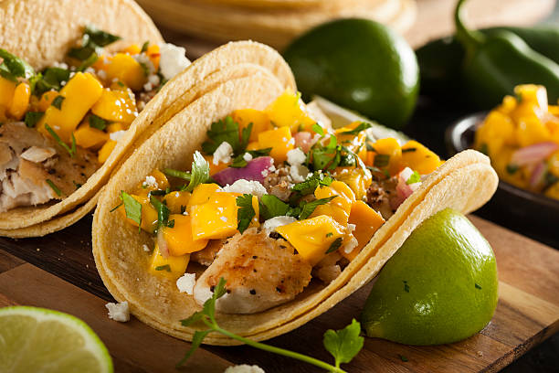

Fish Tacos Recipe

Description
This a great recipe for fish tacos lover that want to DIY
Ingredients
Beer Batter:
- 1 cup all-purpose flour
- 2 tablespoons cornstarch
- 1 tablespoon baking powder
- 1/2 tablespoon salt
- 1 cup beer
- 1 large egg
Taco Sauce:
- 1/2 cup plain yogurt
- 1/2 cup mayonnaise
- 1 lime, juiced
- 1 jalapeno pepper, finely minced
- 1 tablespoon ground cayenne pepper
- 1/2 tablespoon dried oregano
- 1/2 tablespoon ground cumin
- 1/2 tablespoon dried dill weed
Fish Tacos:
- 1 quart oil for frying
- 1 pound cod fillets, cut into 2 to 3 ounces portions
- 2 tablespoons all-purpose flour, or more as needed
- 1(12 ounce) package corn tortillas
- 1/2 medium head cabbage, finely shreddded
Home Page